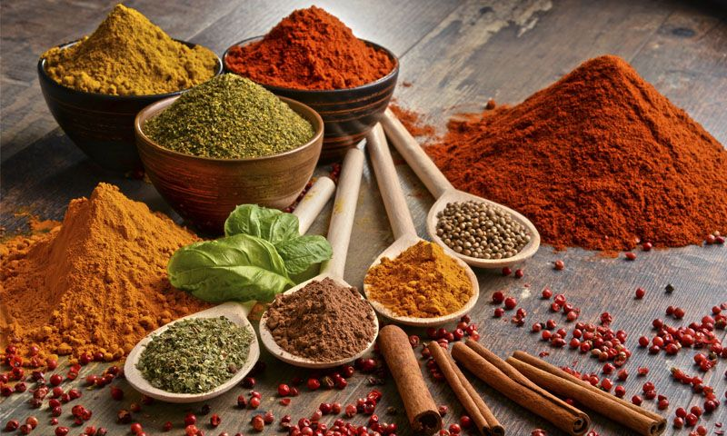

PESQUISA SOBRE CONDIMENTOS
O que são condimentos?
Grande parte dos condimentos possui qualidades culinárias e medicinais, além de serem ingredientes essenciais numa alimentação saudável e equilibrada. Eles realçam o sabor, ajudam na digestão, melhoram a estética dos alimentos e possuem qualidades terapêuticas, como explica a nutricionista Paola Lisbôa: "Condimentos mais comumente conhecidos são: sal, pimenta, ketchup, mostarda, azeite, vinagre e açúcar. Podem ser adicionados antes de servir e durante o consumo, como ketchup e mostarda; outros são usados durante o cozimento para dar sabor e textura aos alimentos, por exemplo, molho barbecue, molho teriyaki, molho de soja e todos têm sabores que podem aprimorar o gosto de uma variedade de carnes e vegetais diferentes. O sal, as ervas e as especiarias são denominadas como condimentos naturais. Já os molhos podem ser considerados condimentos cozidos", analisa.
O que são temperos?
Os temperos são as denominações dadas aos conjuntos de condimentos, os quais são usados para realçar o gosto da preparação. Como por exemplo, a canela, coentro, o alho, o louro e a salsa. A simples presença do tempero pode modificar o sabor da comida, por isso é sempre bom dosar essa união dos condimentos na refeição. Opte por equilibrar os sabores e também variar, criando novas descobertas: "Sempre dê preferência para as ervas, como alecrim, orégano, manjericão, tomilho e cebolinha" indica a profissional. São condimentos mais saudáveis, tendem a trazer mais benefícios para a saúde, proporcionam bem estar e um sabor inigualável. As ervas frescas, são nutritivas e ricas em vitaminas A e C, além de trazerem um aroma fresco ao prato.
Abaixo está uma lista de alguns condimentos que tenho pouco conhecimento e um pouquinho sobre cada um em ordem alfabética:
Anis Estrelado: é conhecido por tratar intoxicações por frutos do mar, por ser antisséptico, anti-inflamatório, calmante, digestivo e diurético. Na culinária, essa especiaria é usada em pratos orientais que levam na preparação porco, pato, galinha ou vegetais; pratos temperados com molho de soja e também no preparo de doces. Pode ser acrescentada ao chá mate dando um sabor especial.
Cardamomo: especiaria proveniente da Índia. É usada em bolos, bolachas, licores, café e conservas de arenque. Seu sabor cítrico lembra uma mistura de gengibre, canela e limão, surpreende o paladar se usada em carnes exóticas ou salada de frutas.
Cominho: Semente que pode ser usada também em pó. Tem aroma e sabor marcante, por isso precisa ser usado com parcimônia. É ingrediente básico da culinária nordestina e da mexicana, usado em carnes, peixes, legumes e ovos.
Dill: planta com aroma picante e fresco, começou a ser utilizado em receitas do Leste Europeu, principalmente nas culinárias russa e escandinava. Tem sabor delicado e é utilizada em legumes, peixes, queijos e omeletes. É o ingrediente básico para o tempero do salmão.
Páprica: especiaria obtida a partir da desidratação e moagem de um tipo especial de pimentão originário da Hungria e da Espanha. Existem duas variedades: a doce e a picante. Entra como tempero de carnes bovinas, suínas e de aves. É ingrediente indispensável do gulash e pode ser usado para decorar maioneses e outros pratos.